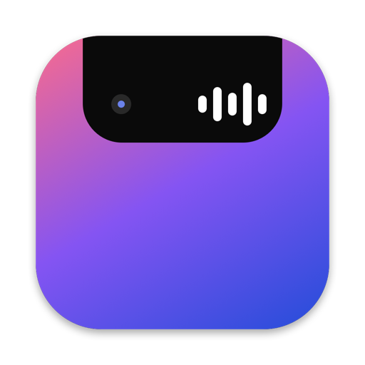

Đang phát từ mọi nguồn
YouTube, Spotify, Apple Music, VLC… với ảnh bìa độ phân giải cao, thanh tiến trình kéo để tua, và bấm vào bài để mở đúng tab đang phát.

NotchIslandNhạc đang phát, cuộc gọi, hẹn giờ, âm lượng, pin, tai nghe và camera – gói gọn trong một viên thuốc ngay dưới camera. Miễn phí, mã nguồn mở.
Rê chuột (hoặc chạm) vào để xem island mở rộng
YouTube, Spotify, Apple Music, VLC… với ảnh bìa độ phân giải cao, thanh tiến trình kéo để tua, và bấm vào bài để mở đúng tab đang phát.
Thay HUD của macOS bằng thanh gọn gàng, tuỳ chỉnh được kiểu và màu.
Cắm sạc, AirPods, Beats với pin từng tai.
Nhận Zalo, Messenger, Discord, Teams, FaceTime và cả cuộc gọi iPhone, kèm tên người gọi, đồng hồ khớp với app và các nút điều khiển.
Xem trước camera lật gương như Photo Booth chỉ bằng một cú bấm.
CPU, RAM, ổ đĩa, mạng; thông báo iPhone hiện lên island khi bạn bật.
.dmg mới nhất ở trang Releases.Không có câu hỏi nào khớp. Báo lỗi hoặc góp ý.
xattr -dr com.apple.quarantine /Applications/NotchIsland.app. Các lần cập nhật sau do app tự tải nên không gặp lại.Cách nhanh nhất: mở Cài đặt → Hỗ trợ, mô tả vấn đề rồi bấm Gửi báo lỗi. App mở sẵn form GitHub kèm thông tin chẩn đoán (chỉ gồm phiên bản, macOS, chip và trạng thái quyền) – bạn chỉ cần bấm Submit. Hoặc tạo issue trực tiếp.